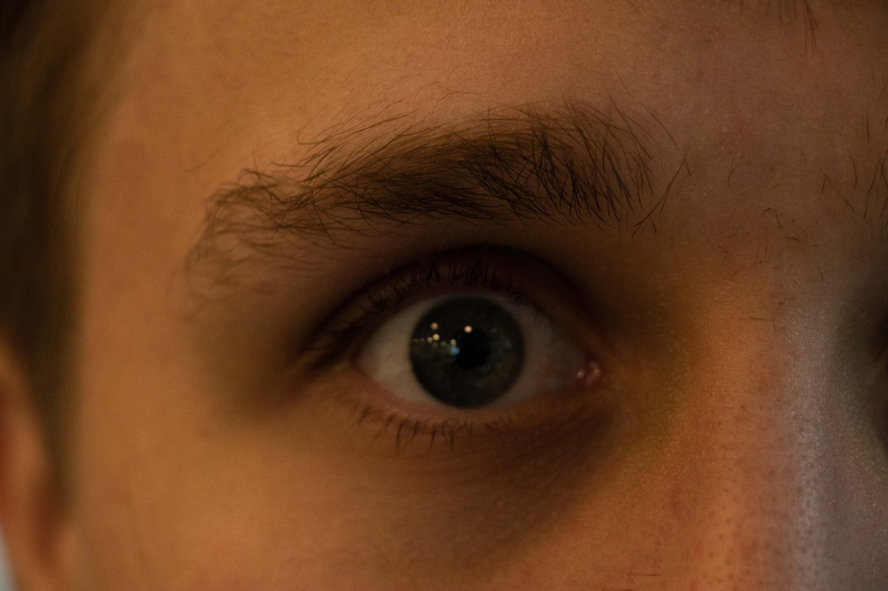

Prod. and storytelling
Bilder
Vi fikk i opgave å ta to bilder, ett som gjorde oss glad og et som gjorde oss trist
.jpg)
.jpg)
Trailer prosjekt
Vi fikk i oppgave å i grupper lagge en trailer for en imaginer film.
4 Bilder Historie
Vi fikk i oppgave å ta 4 bilder som samen skule fortele en historie. Det var også et pluss hvis
det ble en annen historie om man så bildene i motsat rekkefølge.
Mine bilder forteller en historie om en person som er glad, spiller videospillet AmongUs taper og blir sint, og dereter dreper en person i virkeligheten. Om man tar bildene baklengs vil man få en sint og gall person som dreper folk, men som begynner å drepe i videospill i stede og ender opp glad. Historien hetter AmongUs in real life.

Mine bilder forteller en historie om en person som er glad, spiller videospillet AmongUs taper og blir sint, og dereter dreper en person i virkeligheten. Om man tar bildene baklengs vil man få en sint og gall person som dreper folk, men som begynner å drepe i videospill i stede og ender opp glad. Historien hetter AmongUs in real life.